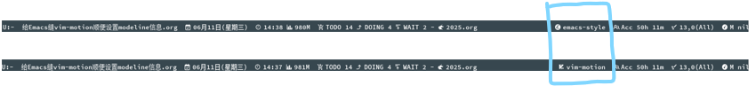

Table of Contents
1. 给Emacs缝vim-motion顺便设置modeline信息
1.1. 基本介绍
大概就是，给Emacs添加了 evil-mode.el 并根据自己积累的函数，
然后根据 (evil-mode) 的变化 \( \begin{bmatrix} \text{nil} \to \text{t} \\ \text{t} \to \text{nil} \end{bmatrix} \) 情况，来给某添加在mode-line-format下的变量，随时赋值
添加在mode-line-format下的变量，写在mode-line上
就像这样

1.2. 详细过程
有些函数是我自己积累下来的(包括但不限于，对着GPT Debug，找SOF(stackoverflow)热心网友，找ESE(emacsstackexchange)热心网友等方式)
所以有些按键原生用不了正常，因为都没有这个函数，可以到 个人仓库 或 ~/.emacs.d/elisp/custom/custom-defun.el 下看看具体的函数
1.2.1. 安装
(use-package evil :ensure t :defer t
1.2.2. 说明
evil-mode最爽的地方，是在于它只是提供了一个虚拟layer按键层
也就是说，evil-mode，与emacs-style原生，是可以共用的
但需要注意一些 坑
- 说明
- evil-emacs-state-modes
默认被emacs接管、默认不能用evil-mode设置vim快捷键，的某些mode，共有
C-h v evil-emacs-state-modes这些默认使用emacs-style的按键风格、默认不能用vim-motion的按键风格，的mode，共有
C-h v evil-emacs-state-modes这些如果要用 evil 设置在 evil-emacs-state-modes 名单上的
从而在特定mode里的vim快捷键的话，方法是
; 用 ibuffer-mode 来举例 (ibuffer-mode 就在 C-h v evil-emacs-state-modes 里面) ; 保证百分百，在加载这些不被evil管理的mode后，再启动evil (with-eval-after-load 'ibuffer ; 对 ibuffer-mode 这类 evil-emacs-state-modes 下只使用 1套 快捷键 ; 对 ibuffer-mode 不使用 emacs-style 快捷键，而是使用 vim-motion 快捷键， ; 反正我们是通过，手动执行 (evil-mode) 函数切换成vim-motion过去，再执行 (evil-mode) 切回emacs-style的，当然只使用 1套 就可以了 (setq evil-emacs-state-modes (delq 'ibuffer-mode evil-emacs-state-modes)) ; 让 ibuffer-mode 可正常使用 evil 的 normal 模式 (evil-make-overriding-map ibuffer-mode-map 'normal) ; 这里是，我个人设置的通用vim快捷键模板，在下面的【配置(开缝！)】可以看得到 (kivnn/set-general-keybindings 'normal ibuffer-mode-map)) ;; 这里是，如果添加了通用vim快捷键模板，还是觉得不够爽，就可以继续配置 ;; [可选项] ;; (evil-define-key 'normal ibuffer-mode-map ;; (kbd "") nil ;; (kbd "") nil ;; (kbd "") nil ;; (kbd "") nil ;; (kbd "") nil)
- 设置modeline信息
设置modeline信息，提示自己当前正处于什么模式，就像这样
实现方法是，给
evil-mode函数，通过advice加添加在mode-line-format的变量更新函数其中
" vim-motion" 和 " emacs-style"的两个图标，需要先在本机安装了 nerd-fonts 字体才能看到噢;; 设置 modeline-keybinding-style 变量 (defvar modeline-keybinding-style " emacs-style") ;; 监听evil-mode函数的变化，从而即时地立即更新 modeline-keybinding-style 变量 (setq evil-mode-line-format nil) (defun kivnn/update-modeline-style-based-on-evil-mode (&rest _) "监听根据 evil-mode 的状态，即时更新 kivnn/current-style 变量" (setq modeline-keybinding-style (if evil-mode " vim-motion" " emacs-style")) (force-mode-line-update)) (advice-add 'evil-mode :after #'kivnn/update-modeline-style-based-on-evil-mode) (setq-default mode-line-format (list '(:eval (format "%s" modeline-keybinding-style))))然后预定的行为是，打开Emacs，就先显示 " emacs-style"
然后执行了
(evil-mode)切换了按键风格，就会立即显示 " vim-motion"然后又执行了
(evil-mode)再次切换了按键风格，就会立即显示 " emacs-style"
- evil-emacs-state-modes
1.2.3. 配置(开缝！)
;; ========================================
;; 模拟vim layer的按键风格，的前提准备
;; ========================================
(defun kivnn/evil-split-window-right ()
(interactive)
(split-window-right)
(windmove-right))
(defun kivnn/evil-split-window-below ()
(interactive)
(split-window-below)
(windmove-down))
;; ========================================
;; 设置基本通用风格的个人快捷键模板
;; ========================================
(defun kivnn/set-general-keybindings (state keymap)
"设置基本通用风格的个人快捷键模板"
(evil-define-key state keymap
(kbd "h") #'evil-backward-char
(kbd "j") #'evil-next-line
(kbd "k") #'evil-previous-line
(kbd "l") #'evil-forward-char
(kbd "S") #'save-buffer
(kbd "s") nil
(kbd "J") #'kivnn/move-next-five-lines
(kbd "K") #'kivnn/move-prev-five-lines
(kbd "M") #'dirvish-side
(kbd "Q") #'delete-window
(kbd "sh") #'split-window-right
(kbd "sj") #'kivnn/evil-split-window-below
(kbd "sk") #'split-window-below
(kbd "sl") #'kivnn/evil-split-window-right
(kbd "C-w h") #'windmove-left
(kbd "C-w j") #'windmove-down
(kbd "C-w k") #'windmove-up
(kbd "C-w l") #'windmove-right
(kbd "<up>") #'kivnn/resize-top-five-unit
(kbd "<down>") #'kivnn/resppize-bottom-five-unit
(kbd "<left>") #'kivnn/resize-left-five-unit
(kbd "<right>") #'kivnn/resize-right-five-unit
(kbd "SPC /") #'kivnn/isearch-forward
(kbd "SPC SPC /") #'kivnn/isearch-backward
(kbd "SPC ,") #'previous-buffer
(kbd "SPC .") #'next-buffer
(kbd "SPC m") #'kivnn/update-modeline-all-information
(kbd "SPC SPC q") #'evil-mode
(kbd "C-f") #'evil-forward-char
(kbd "C-b") #'evil-backward-char
(kbd "C-n") #'evil-next-line
(kbd "C-p") #'evil-previous-line))
;; ========================================
;; 模拟vim layer的按键风格 enhance-evil.el
;; ========================================
(use-package evil
:ensure t
:defer t
:config
;;; ========================================
;;; global-mode
;;; ========================================
(progn
(define-key evil-normal-state-map (kbd "S") #'save-buffer)
(define-key evil-normal-state-map (kbd "s") nil)
(define-key evil-normal-state-map (kbd "J") #'kivnn/move-next-five-lines)
(define-key evil-normal-state-map (kbd "K") #'kivnn/move-prev-five-lines)
(define-key evil-normal-state-map (kbd "M") #'dirvish-side)
(define-key evil-normal-state-map (kbd "Q") #'delete-window)
(define-key evil-normal-state-map (kbd "sh") #'split-window-right)
(define-key evil-normal-state-map (kbd "sj") #'kivnn/evil-split-window-below)
(define-key evil-normal-state-map (kbd "sk") #'split-window-below)
(define-key evil-normal-state-map (kbd "sl") #'kivnn/evil-split-window-right)
(define-key evil-normal-state-map (kbd "C-w h") #'windmove-left)
(define-key evil-normal-state-map (kbd "C-w j") #'windmove-down)
(define-key evil-normal-state-map (kbd "C-w k") #'windmove-up)
(define-key evil-normal-state-map (kbd "C-w l") #'windmove-right)
(define-key evil-normal-state-map (kbd "<up>") #'kivnn/resize-top-five-unit)
(define-key evil-normal-state-map (kbd "<down>") #'kivnn/resppize-bottom-five-unit)
(define-key evil-normal-state-map (kbd "<left>") #'kivnn/resize-left-five-unit)
(define-key evil-normal-state-map (kbd "<right>") #'kivnn/resize-right-five-unit)
(define-key evil-normal-state-map (kbd "SPC /") #'kivnn/isearch-forward)
(define-key evil-normal-state-map (kbd "SPC SPC /") #'kivnn/isearch-backward)
(define-key evil-normal-state-map (kbd "SPC ,") #'previous-buffer)
(define-key evil-normal-state-map (kbd "SPC .") #'next-buffer)
(define-key evil-normal-state-map (kbd "SPC o") #'delete-trailing-whitespace))
(define-key evil-normal-state-map (kbd "SPC g") #'magit)
(define-key evil-normal-state-map (kbd "SPC e") #'telega)
(define-key evil-normal-state-map (kbd "SPC t") #'eat)
(define-key evil-normal-state-map (kbd "SPC b") #'ibuffer)
;;; ========================================
;;; dired-map
;;; ========================================
(with-eval-after-load 'dired
(kivnn/set-general-keybindings 'normal dired-mode-map)
(evil-define-key 'normal dired-mode-map
(kbd "a") #'dired-create-empty-file
(kbd "r") #'dired-do-rename
(kbd "m") #'dired-mark
(kbd "M") #'dirvish-side
(kbd "u") #'dired-unmark
(kbd "d") #'dired-do-delete
(kbd "h") #'dired-up-directory
(kbd "j") #'dired-next-line
(kbd "k") #'dired-previous-line
(kbd "l") #'dired-find-file))
;;; ========================================
;;; org-mode
;;; ========================================
(with-eval-after-load 'org
(evil-make-overriding-map org-mode-map 'normal)
(kivnn/set-general-keybindings 'normal org-mode-map)
(evil-define-key 'normal org-mode-map
;; about te<x>t
(kbd "SPC x v") #'kivnn/toggle-inline-images-with-valign
(kbd "SPC x c") #'org-latex-preview
(kbd "SPC x z") #'kivnn/org-latex-preview
(kbd "SPC x b") #'kivnn/jump-the-beginning-of-the-latex-fragment
(kbd "SPC x f") #'kivnn/jump-the-ending-of-the-latex-fragment
(kbd "SPC x n") #'kivnn/jump-the-next-latex-fragment
(kbd "SPC x p") #'kivnn/jump-the-previous-latex-fragment
(kbd "SPC x ,") #'org-previous-item
(kbd "SPC x .") #'org-next-item
(kbd "SPC x 0") #'valign-mode
;; about <a>genda
(kbd "SPC a t") #'kivnn/org-agenda-change-headline-to-todo
(kbd "SPC a d") #'kivnn/org-agenda-change-headline-to-done
(kbd "SPC a i") #'kivnn/org-agenda-change-headline-to-doing
(kbd "SPC a w") #'kivnn/org-agenda-change-headline-to-wait
(kbd "SPC a j") #'org-todo
(kbd "SPC a -") #'org-timestamp-inactive
(kbd "SPC a 0") #'org-archive-subtree
(kbd "SPC a =") #'org-timestamp
(kbd "SPC a [") #'org-schedule
(kbd "SPC a ]") #'org-deadline
;; about de<n>ote
(kbd "SPC n a") #'denote
(kbd "SPC n c") #'denote-backlinks
(kbd "SPC n l") #'denote-link-or-create
(kbd "SPC n r") #'denote-rename-file
(kbd "SPC n ,") #'denote-find-backlink
(kbd "SPC n .") #'denote-find-link
;; about custom
(kbd "SPC 2") #'kivnn/magit-commit-template-wsl-archlinux
(kbd "SPC 3") #'kivnn/magit-commit-template-archlinux)
(evil-define-key 'insert org-mode-map
(kbd "$") #'kivnn/insert-inline-OCDL))
;;; ========================================
;;; ibuffer-mode
;;; ========================================
(with-eval-after-load 'ibuffer
(setq evil-emacs-state-modes (delq 'ibuffer-mode evil-emacs-state-modes))
(evil-make-overriding-map ibuffer-mode-map 'normal)
(kivnn/set-general-keybindings 'normal ibuffer-mode-map))
;; [可选项] (evil-define-key 'normal ibuffer-mode-map (kbd "") nil)
;;; ========================================
;;; dashboard-mode
;;; ========================================
(with-eval-after-load 'dashboard
(kivnn/set-general-keybindings 'normal dashboard-mode-map)
(evil-define-key 'normal dashboard-mode-map
(kbd "SPC SPC r") #'consult-recent-file
(kbd "SPC SPC b") #'bookmark-bmenu-list
(kbd "SPC SPC a") #'org-agenda-list))
;;; ========================================
;;; org-agenda-mode
;;; ========================================
(with-eval-after-load 'org-agenda
(setq evil-emacs-state-modes (delq 'org-agenda-mode evil-emacs-state-modes))
(evil-make-overriding-map org-agenda-mode-map 'normal)
(kivnn/set-general-keybindings 'normal org-agenda-mode-map)))
;; [可选项] (evil-define-key 'normal org-agenda-mode-map (kbd "") nil)
1.2.4. 一些感受
其实我这样做，是因为我个人，去年不知道在那个平台的帖子(貌似是贴吧？)
看到有人用 GNU Emacs，在各种各样的模式、功能、UI、modeline上
缝出来了一个美观程度甚至不输现在的neovim的 “vim” 出来
但我实在是忘记这张图究竟是在哪个帖子发出来的了 (´･ω･`)?
因为我个人被那张图深深着迷，所以我自己也打算通过 GNU Emacs 缝一个 “vim” 出来
首先选择 “vim” 的方式有几种，可以是 doom emacs，可以是 spacemacs
但这几种实现方式，还是更像是 “另一种生态” 了。不好在自己积累下来的基础上去缝 “vim”
于是就选用了最能缝的 evil-mode，在此我个人，感谢为 evil-mode 贡献的各位作者们，感谢您们 ~(￣▽￣)~*
而且也感谢GPT 4o，没有GPT 4o的话，估计可能截至到写文章的今天，也许还卡在为特定mode配置快捷键的阶段，感谢 (～￣▽￣)～